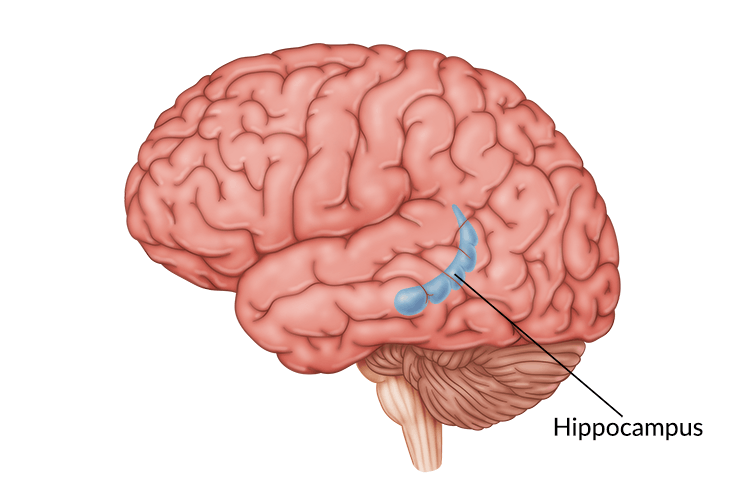
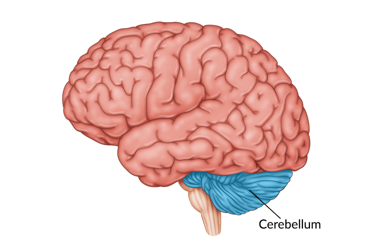
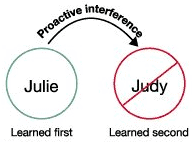
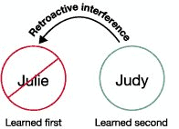

Storage
Sensory Memory
Sensory Memory is the perception of the 5 senses that humans are able to detect. Those sensory informations are stored as memory.
Iconic Memory
Deals with storing visual memories, like visual images.
Echoic Memory
Deals with storing auditory memories, like a song or speech.

Short Term / Working Memory
Memory that only lasts for about 30 seconds, you can only remember a few items at a time.
Long Term Memory
Memory that will be stored for a long period of time, can last longer than short term memories.
Explicit Memory System
A type of long term memory that deals with facts and events.
Hippocampus
A part of the brain that deals with storing and retrieving long term memory.
Implicit / Procedural Memory System
Memories that are automatically stored without knowing it.
Cerebellum
Deals with muscle control which is when most implicit memories are learned.
The Amygdala and Memory / Flashbulb Memory
Amygdala is a part of the brain that deals with human emotion. Flashbulb memory occurs during an impactful or tragic event that will make the memory memorable due to your emotion during that event.
Proactive Interference
Unable to learn new information due to its interference with previous learned information.
Retroactive Interference
Unable to recall previous information due to its interference with a newly learned information.
